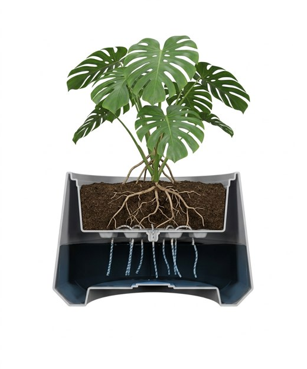

Ellogrin Pot Series
Rumah terbaik bagi tanaman pilihan Anda
Koleksi pot fungsional berdesain elegan, dirancang untuk mempercantik setiap sudut hunian Anda, baik indoor maupun outdoor.
Kenali Keunggulan Lihat Koleksi10Varian
6Pilihan Warna
4–12 kgRingan Dipindah

Keunggulan
Detail yang membedakan
Pilih satu keunggulan untuk mengenalnya lebih dekat.
Simulasi Self-Watering
Satu kali Isi Air, Tanaman Segar Lebih Lama
*Fiddle Leaf Fig & Sansevieria: dihitung dari dokumen internal "Analisis Konsumsi Air Reservoir 23 Liter" (metode evapotranspirasi FAO Penman-Monteith). Monstera: estimasi ilustratif, belum ada data uji.
Isi reservoir, lalu biarkan waktu berlalu. Amati bagaimana air naik menghidrasi media tanam dan menjaga tanaman tetap segar.

0%Reservoir
0%Kelembapan tanah
0Hari berlalu
Mulai dengan mengisi reservoir.
Video Selfwatering
Saksikan bagaimana sistem ini bekerja pada pot Ellogrin.